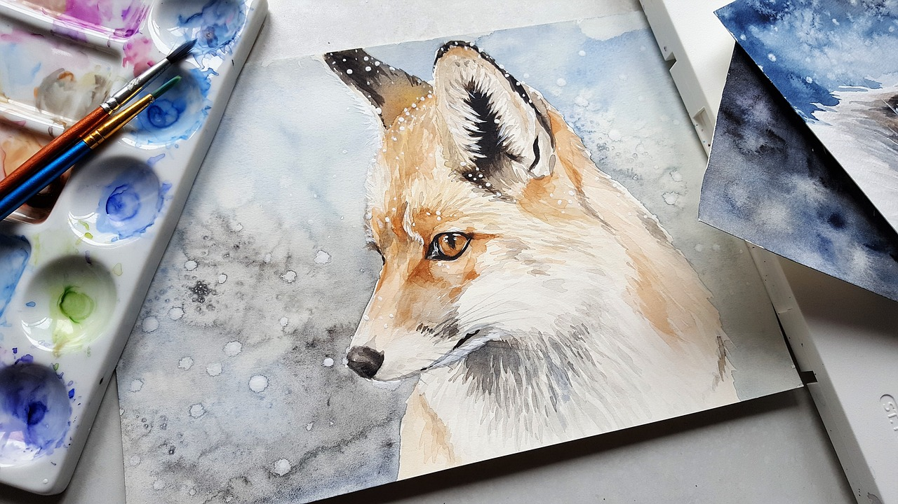

Ever since I was little, I've always wanted to be an artist. I grew up drawing just about every day, always finding joy in the work I created. In high school, I continued my passion for creating and was awestruck when I discovered painting. I loved the way I could draw with color on a canvas, and create texture and emotion from the movement of my paintbrush. I loved exploring different mediums of paint, namely acrylic, oil paint, and watercolors. In college, my love for watercolor painting flourished. I loved how relaxing the medium felt, and how easily the watered down pigment would glide across the surface of the paper. Every piece I created in watercolor felt like it had such a whimsical sensation to it due to the characteristics of the medium itself.
Watercolor paints are translucent, water-based paints created from raw pigments and water-soluble binders. They can come in two forms, either as a liquid in a paint tube, or as small dried cakes in a pan or set. Watercolor pan sets are widely used by beginners who are new to the medium, as they are easy clean-up and simple to store. Depending on the brand, watercolors that come in pans tend to be a bit more translucent while watercolors from the tube tend to have a more opaque look to them. However, watercolors from the pan can be layered to create a more opaque look and watercolors from the tube can be watered down to create a more transulucent look, allowing the artist to achieve their desired goal through both forms.
To begin watercolor painting, one will need paints, a jar of water, a set of brushes, a paper towel, paper tape, a pencil, and watercolor paper. It's important to tape the paper down to a surface so that it doesn't wrinkle from the water being applied. Watercolor paper is built to hold a lot of liquid, but it can still become wrinkled or puckered in the drying process. After taping down the paper, it's always good to lightly sketch out the idea for the painting in pencil before beginning to paint. Unlike other painting mediums, watercolor cannot be painted over; due to its translucent qualities, the colors between layers will mix. For this reason, it's important to have an idea planned out. Once the sketch is finished, it's time to paint! There are a variety of techniques for painting with watercolor, such as wetting the area of the paper first and then adding in paint, wetting the paint and painting on dry paper, or even dry brushing paint on the paper to get a coarse, textured look. Each technique creates its own unique look, allowing the beauty and versatility of the watercolor medium to shine through in the artwork.